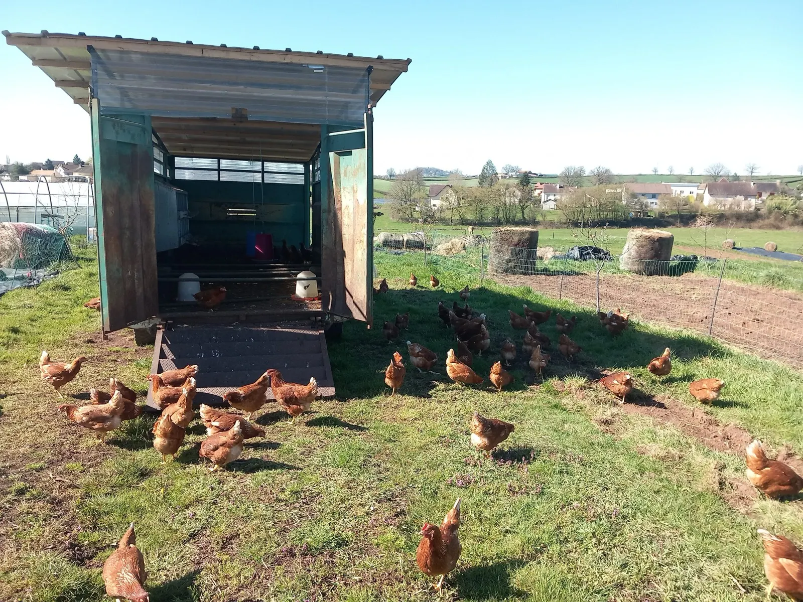
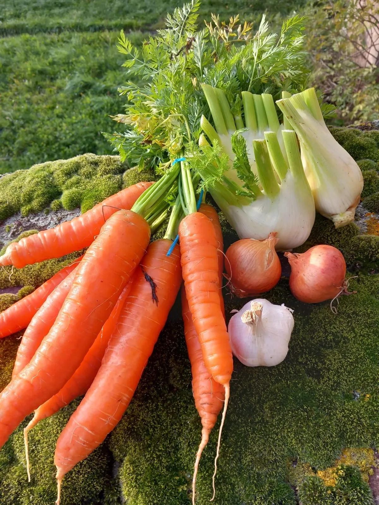
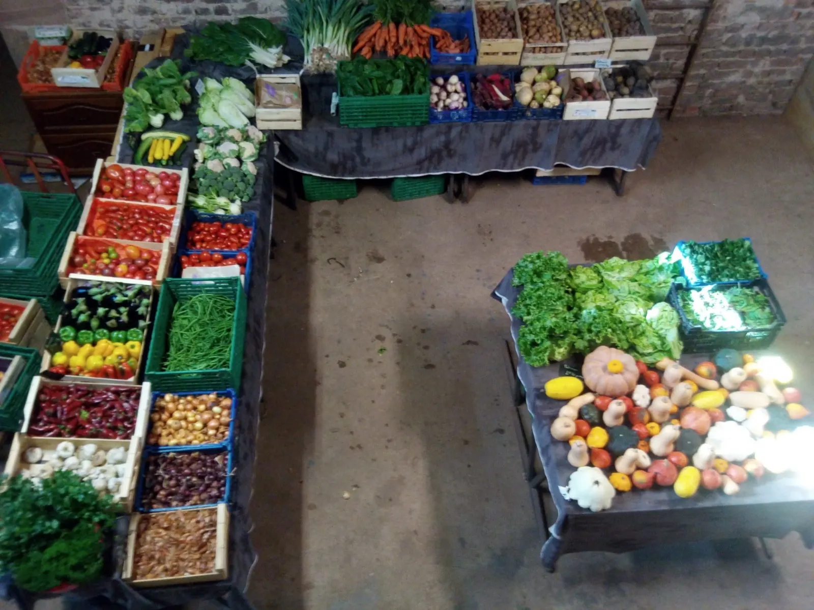
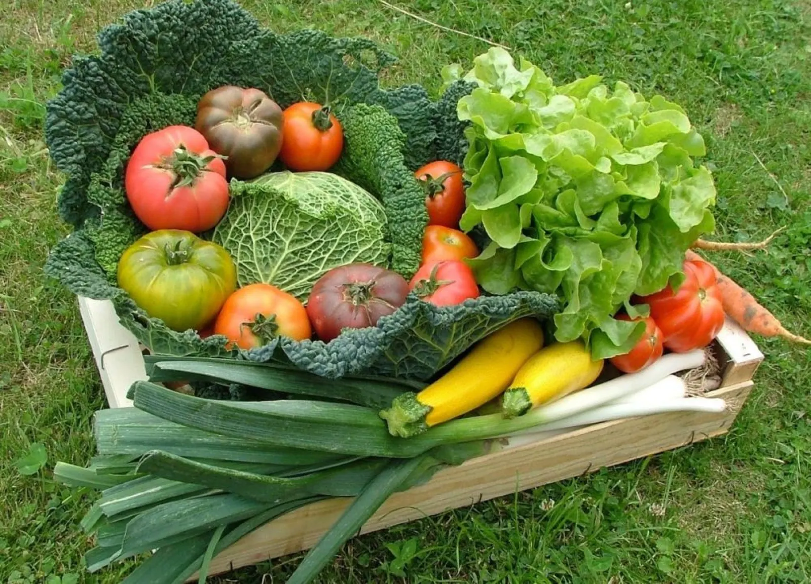
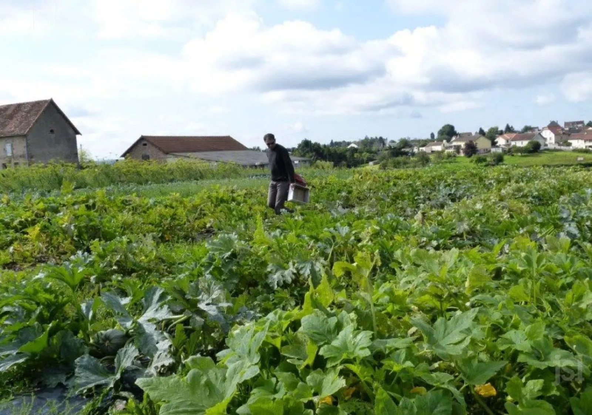

Des produits fermiers bio et locaux
Plants potagers, légumes, fruits et œufs, tous issus de l'agriculture biologique : sans produits chimiques, selon les saisons, dans un sol vivant. Toute notre production est en libre service à la boutique de la ferme, et vous pouvez cueillir vous-même vos légumes.

Boutique de la ferme
En libre service
- Mercredi
- 9h à 12h
- Vendredi
- 16h à 18h
- Samedi
- 9h à 12h
- Agriculture biologiquetous nos produits, sans produits chimiques
- Libre serviceà la boutique, trois jours par semaine
- Libre cueillettedans le jardin, aux mêmes heures
- Click and collectcommande en ligne, retrait à la ferme
La ferme
La Ferme de la Motte est installée au domaine agricole de la motte Loisy, à Saint-Bérain-sous-Sanvignes. Aux Jardins de la Motte, les légumes sont cultivés en agriculture biologique, avec une part d'agroforesterie, et les poules vivent en plein air autour de leur poulailler mobile.
Plants potagers, légumes, fruits et œufs : tout ce que nous produisons se vend ici, à la boutique en libre service, en libre cueillette dans le jardin, en click and collect, ou livré sur votre lieu de travail.
- Sans produits chimiques
- Selon les saisons
- Dans un sol vivant
Un tiers lieu nourricier à la motte
L'association Locaux mott'IV est née en novembre 2022, d'un collectif de citoyens consommateurs, de producteurs locaux et de propriétaires de foncier agricole. Son projet : un lieu qui regroupe sur le domaine de la motte Loisy maraîchage, arboriculture, production laitière, boulangerie paysanne, poulets de chair, poules pondeuses, plantes aromatiques et médicinales, et qui appartienne aux personnes qui y travaillent et à celles qui en bénéficient. Écrire à l'association

Carottes, fenouil, oignons et ail du jardinComment acheter nos produits ?
Quatre façons de remplir votre panier, à la ferme ou depuis chez vous.

La boutique, en libre service-
Magasin à la ferme
Choisissez vos produits !
Toute notre production en libre service à la boutique de la ferme.
Mercredi 9h à 12h
Vendredi 16h à 18h
Samedi 9h à 12h -
Libre cueillette
Cueillez vous-même vos légumes !
Prenez le temps de flâner dans le jardin, aux mêmes heures que la boutique.
-
Click and collect
La rapidité et la simplicité
Commandez de chez vous, retirez à la ferme :
Mardi 16h à 20h
Mercredi 9h à 20h
Vendredi 16h à 20h
Samedi 9h à 13h -
Livraison en entreprise
Jouez collectif !
Nous pouvons livrer les produits de la ferme sur votre lieu de travail, pour vous et vos collègues.
Cueillez vous‑même vos légumes.
Prenez le temps de flâner dans le jardin.
- Mercredi 9h à 12h
- Vendredi 16h à 18h
- Samedi 9h à 12h


Notre production
Tous nos produits sont issus de l'agriculture biologique, en respectant les saisons.
- Plants potagers
- Légumes
- Fruits
- Œufs
Les plants potagers
Pour votre propre potager, sur notre boutique en ligne. Voir les plants
Légumes et fruits
Les produits du jardin, au fil des saisons, en boutique ou en cueillette, et des fruits d'autres producteurs bio français, selon livraison.
Les œufs
Ceux de nos poules, élevées en plein air autour du poulailler mobile.
Venir à la ferme
Une question, une commande pour votre entreprise : appelez-nous ou écrivez à la ferme.
- Téléphone
- 06 01 92 27 09
- Adresse
- La motte Loisy
71300 Saint-Bérain-sous-Sanvignes - Boutique et cueillette
- Mercredi 9h à 12h
Vendredi 16h à 18h
Samedi 9h à 12h